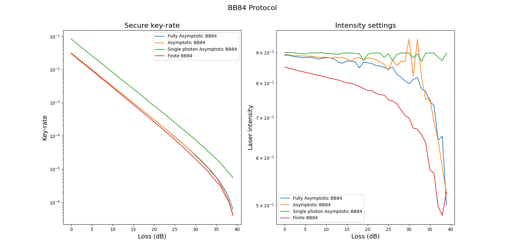
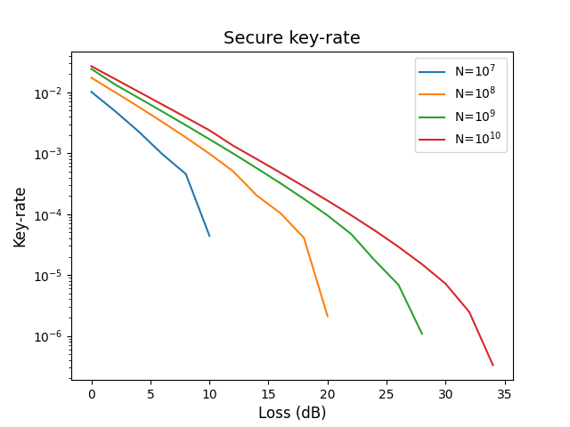

QKD key-rate
This page contains advanced examples for the tno.quantum.communication.qkd_key_rate package.
Examples of basic usage can be found in the module documentation.
The package provides python code to compute optimal protocol parameters for different quantum key distribution (QKD) protocols.
Requirements
Install the following dependencies to run the examples below:
pip install tno.quantum.communication.qkd_key_rate~=2.0
pip install matplotlib
pip install tqdm
Examples
Example 1: Compute secure key-rate for various BB84 protocols as function of the loss.
{kind=link}
1"""Example that shows how to plot optimal key-rate versus attenuation""" 2 3import matplotlib.pyplot as plt 4import numpy as np 5 6from tno.quantum.communication.qkd_key_rate.quantum.bb84 import ( 7 BB84AsymptoticKeyRateEstimate, 8 BB84FiniteKeyRateEstimate, 9 BB84FullyAsymptoticKeyRateEstimate, 10) 11from tno.quantum.communication.qkd_key_rate.quantum.bb84_single_photon import ( 12 BB84SingleAsymptoticKeyRateEstimate, 13) 14from tno.quantum.communication.qkd_key_rate.quantum import standard_detector 15from tno.quantum.communication.qkd_key_rate.quantum import KeyRate 16from tqdm import tqdm 17 18# Create a custom detector 19detector = standard_detector.customise( 20 dark_count_rate=6e-7, 21 polarization_drift=0.0707, 22 error_detector=5e-3, 23 efficiency_detector=0.1, 24) 25 26distance = np.arange(0, 40) 27attenuation_factor = 1 28attenuation = attenuation_factor * distance 29fig, (ax1, ax2) = plt.subplots(1, 2, figsize=(16, 8)) 30 31protocols: dict[str, KeyRate] = { 32 "Fully Asymptotic BB84": BB84FullyAsymptoticKeyRateEstimate( 33 detector=detector, 34 ), 35 "Asymptotic BB84": BB84AsymptoticKeyRateEstimate( 36 detector=detector, number_of_decoy=2 37 ), 38 "Single photon Asymptotic BB84": BB84SingleAsymptoticKeyRateEstimate( 39 detector=detector, 40 ), 41 "Finite BB84": BB84FiniteKeyRateEstimate(detector=detector, number_of_pulses=1e12), 42} 43 44for label, protocol in protocols.items(): 45 key_rate, intensity = [], [] 46 for att in tqdm(attenuation, desc=f"Processing {label}"): 47 x, rate = protocol.optimize_rate(attenuation=att) 48 key_rate.append(rate) 49 intensity.append(x["mu"][0]) 50 51 ax1.semilogy(attenuation, key_rate, label=label) 52 ax2.semilogy(attenuation, intensity, label=label) 53 54# Labels/axis 55ax1.set_xlabel("Loss (dB)", fontsize=14) 56ax1.set_ylabel("Key-rate", fontsize=14) 57ax1.set_title("Secure key-rate", fontsize=16) 58ax1.legend() 59 60ax2.set_xlabel("Loss (dB)", fontsize=14) 61ax2.set_ylabel("Laser intensity", fontsize=14) 62ax2.set_title("Intensity settings", fontsize=16) 63ax2.legend() 64 65fig.suptitle("BB84 Protocol", fontsize=16) 66plt.show()
Processing Fully Asymptotic BB84: 100%|███████████████████████████████████████████████████████████████████████████████████| 40/40 [00:01<00:00, 30.07it/s]
Processing Asymptotic BB84: 100%|█████████████████████████████████████████████████████████████████████████████████████████| 40/40 [00:23<00:00, 1.72it/s]
Processing Single photon Asymptotic BB84: 100%|███████████████████████████████████████████████████████████████████████████| 40/40 [00:00<00:00, 42.25it/s]
Processing Finite BB84: 100%|█████████████████████████████████████████████████████████████████████████████████████████████| 40/40 [12:27<00:00, 18.68s/it]
Example 2: Compute secure key-rate as a function of the number of pulses for the BB84 finite key-rate protocol.
{kind=link}
1"""Example BB84 FiniteKeyRate estimate for various number of pulses."""
2
3import matplotlib.pyplot as plt
4import numpy as np
5
6from tno.quantum.communication.qkd_key_rate.quantum.bb84 import (
7 BB84FiniteKeyRateEstimate,
8)
9from tno.quantum.communication.qkd_key_rate.quantum import standard_detector
10from tqdm import tqdm
11
12# Create a custom detector
13detector = standard_detector.customise(
14 dark_count_rate=6e-7,
15 polarization_drift=0.0707,
16 error_detector=5e-3,
17 efficiency_detector=0.1,
18)
19
20distance = np.arange(0, 40, 2)
21attenuation_factor = 1
22attenuation = attenuation_factor * distance
23fig, ax = plt.subplots()
24
25
26power_number_of_pulses = [7, 8, 9, 10]
27for power in power_number_of_pulses:
28 label = rf"N=$10^{{{power}}}$"
29 protocol = BB84FiniteKeyRateEstimate(detector=detector, number_of_pulses=10**power)
30 key_rate = []
31 for att in tqdm(attenuation, desc=f"Processing N=10^{power}"):
32 try:
33 _, rate = protocol.optimize_rate(attenuation=att)
34 key_rate.append(rate)
35 except:
36 break
37
38 ax.semilogy(attenuation[:len(key_rate)], key_rate, label=label)
39
40# Labels/axis
41ax.set_xlabel("Loss (dB)", fontsize=12)
42ax.set_ylabel("Key-rate", fontsize=12)
43ax.set_title("Secure key-rate", fontsize=14)
44ax.legend()
45
46plt.show()